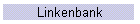

VCLB-1 Antwerpen Middengebied
Vrij Centrum voor Leerlingenbegeleiding

Deze website werd
keren bezocht sinds 15 januari 2010
U kunt een e-mailbericht met vragen of opmerkingen over deze website verzenden aan
webmaster@clb-ami1.be
Laatst bijgewerkt: 01 december 2010